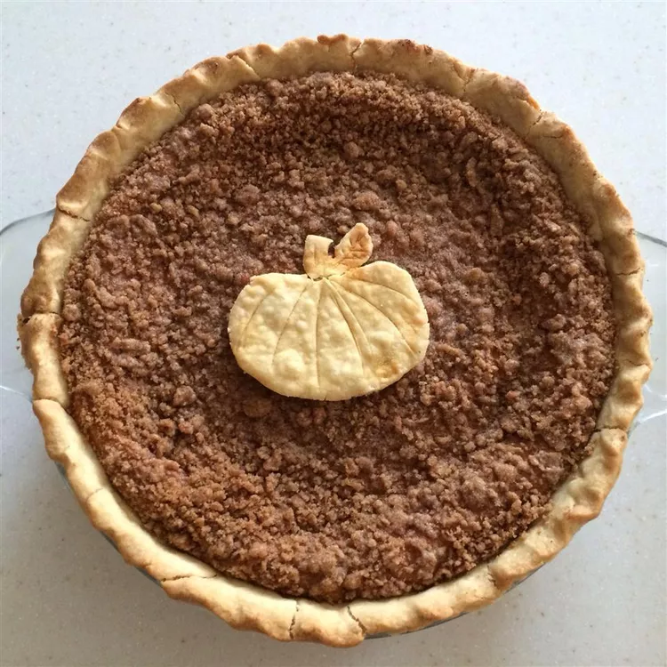

Pumpkin Pie

This pumpkin pie has a walnut streusel topping that is optional. Serve with whipped topping or ice cream.
Ingredients
- 1 (15 ounce) can pumpkin puree
- 1 (14 ounce) can sweetened condensed milk
- 2 egg yolks
- 1 teaspoon ground cinnamon
- ½ teaspoon ground ginger
- ½ teaspoon ground nutmeg
- ½ teaspoon salt
- 2 egg whites
- 1 (9 inch) unbaked pie shell
- 2 tablespoons all-purpose flour
- ¼ cup packed brown sugar
- 1 teaspoon ground cinnamon
- 2 tablespoons butter, chilled
- 1 cup chopped walnuts
Steps
- Preheat the oven to 425 degrees F (220 degrees C).
- In a large bowl, mix together the pumpkin, sweetened condensed milk, and egg yolks. Stir in 1 teaspoon cinnamon, ginger, nutmeg, and salt. In a large glass or metal bowl, whip egg whites until soft peaks form. Gently fold into pumpkin mixture. Pour filling into pie shell.
- Bake for 15 minutes in the preheated oven. While the pie is baking, prepare the streusel topping: In a small bowl, combine the flour, brown sugar, and 1 teaspoon cinnamon. Blend in the cold butter with a fork or pastry blender until the mixture is crumbly. Mix in the chopped nuts. Sprinkle the topping over the pie.
- Reduce the heat to 350 degrees F (175 degrees C). Bake an additional 40 minutes, or until set.